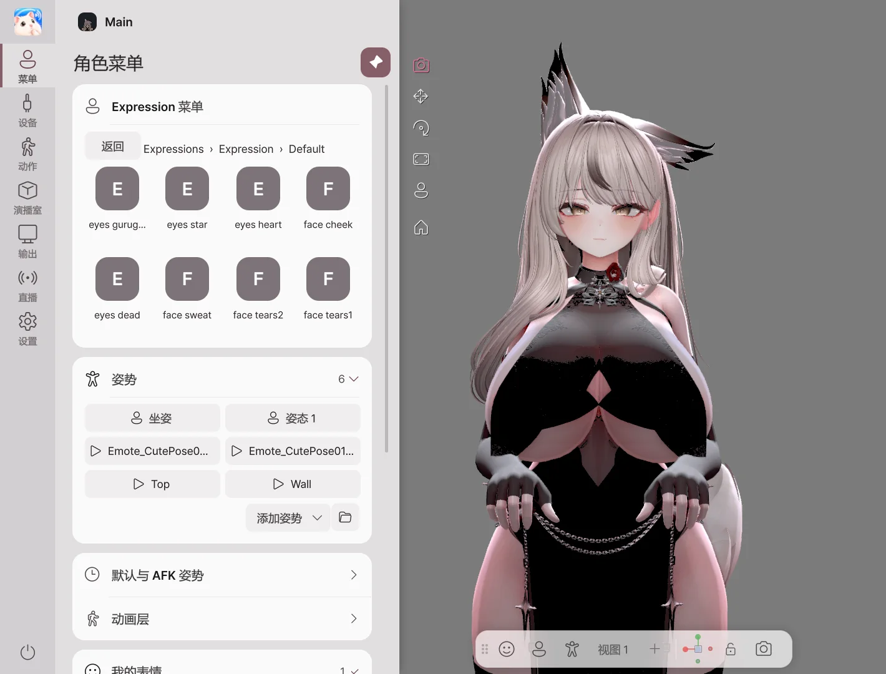

开始
按照先调用角色、连接我的动作、再输出广播画面的顺序开始。
安装和运行
- 从 BOOTH 购买记录中获取 Avatar Live ZIP 文件。
- 将压缩文件全部解压到所需的文件夹。
- 运行文件夹中的
AvatarLive.exe。 - 在产品激活界面输入购买时收到的信息，然后点击激活。
需要 Windows 10 / 11 64 位和支持 DirectX 11 的显卡。想要跟随面部和手部动作，请准备摄像头；想要用声音控制嘴部动作，请准备麦克风。
1. 打开角色

- 点击打开角色或将文件拖到窗口中。
- 从角色列表中选择要使用的角色。
- 点击开始 Avatar Live。出现场景列表时，选择要使用的场景。
| 拥有的文件 | 待办事项 |
|---|---|
.vavatar |
原样调用。 |
.vrm |
原样加载。支持 VRM 0.x 和 1.0。 |
| Unity 身份项目 | 使用 导出角色 创建 .vavatar 后加载。 |
2. 连接我的动作

- 点击左侧设备。
- 在网络摄像头列表中选择要使用的相机，并打开标题右侧的开关。
- 面向屏幕点击正面校准。
- 如果想用声音控制嘴巴动作，也选择麦克风并打开开关。
如果使用 iPhone 或外部追踪器，请在 设备 中查看连接方法。
3. 设置背景和构图

- 服装·表情：在左侧菜单选择。
- 脸部·手部动作：在动作中调整。
- 背景·灯光：在工作室中选择。
- 构图：在底部摄像头工具栏选择脸部·半身·全身。
按 F1 可以隐藏菜单，只看虚拟形象。再次按下可以显示菜单。
4. 连接到直播软件
| 使用目的 | 打开位置 |
|---|---|
| 将虚拟形象导入此 PC 的 OBS | Spout2 连接 |
| 发送视频到其他 PC 的 OBS | NDI 连接 |
| 用作 Discord·Zoom 摄像头 | 虚拟摄像头 |
| 共享游戏和角色 | 屏幕共享 |
| 与朋友的角色共同直播 | 远程合播 |
在开始直播之前，请确认 OBS 或接收方的实际画面。我的工作屏幕和输出摄像头的构图可能不同。
版本与退出
Basic 版本用于个人·非公开使用，Pro 版本用于直播·视频公开·商业用途。请在 各版本功能 中确认所需功能。
用左下角的电源按钮退出程序。如果窗口的 X 按钮设置为最小化到托盘，直播将继续。X 按钮的操作可在设置 → 窗口中更改。